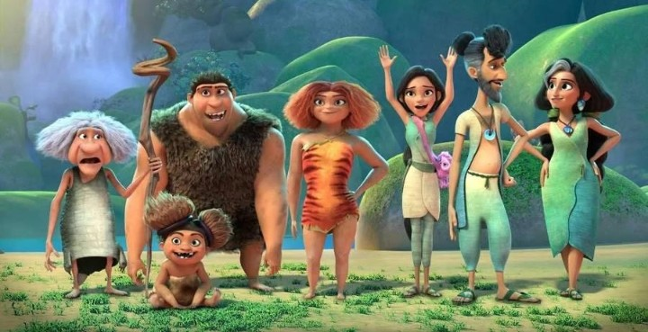
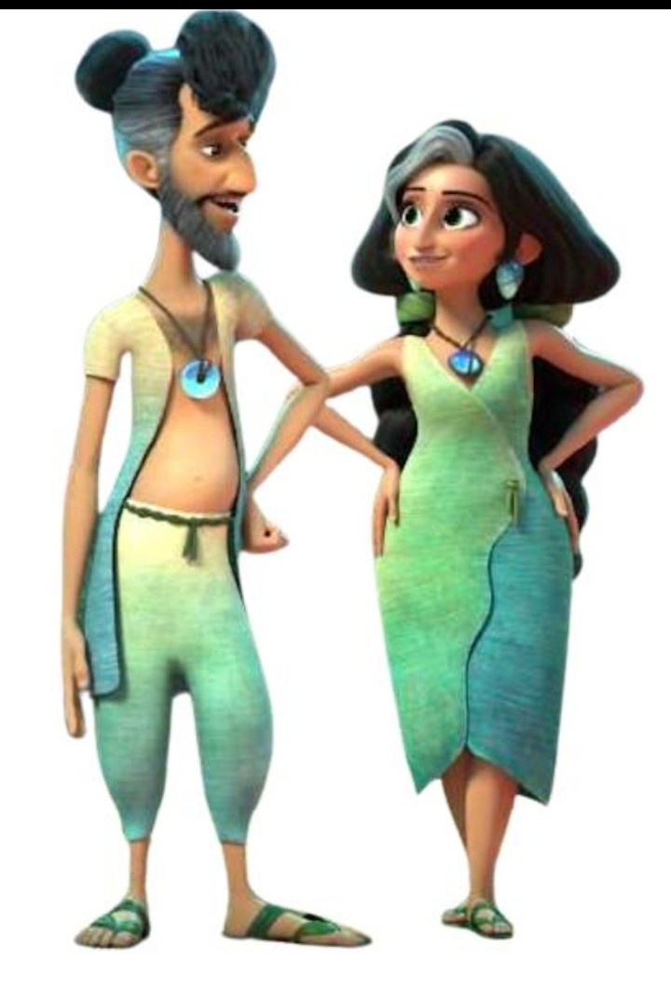
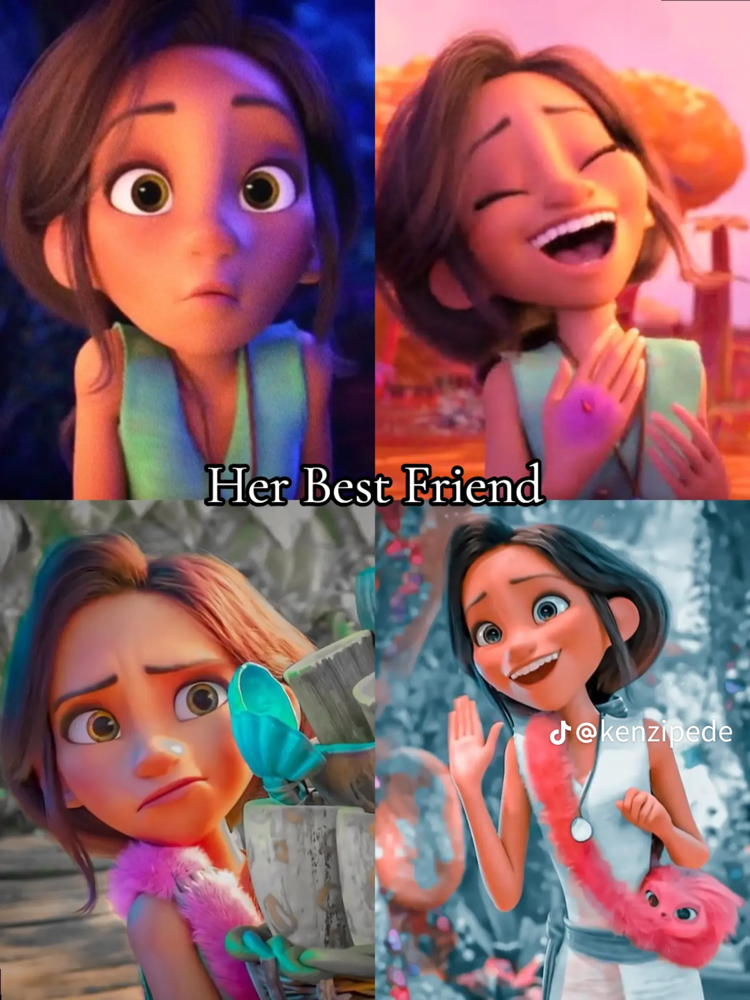
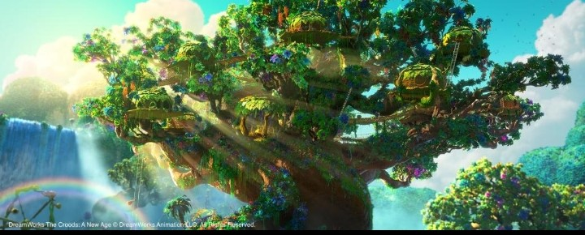

In the Croods: A New Age, the Croods continue thier journey and eventually encounter another family called the bttermans.

The Betterman are very different from the croods, they are more advanced and have developed a comfortanle way of living. They have a large home, grow food and use different inventions to make thier lives easier.
The Betterman consists;
Hope Betterman - She the mother of the family. shes confident, intelligent,organized and likes having a comfortable and well-planned life
Phil Betterman - Hope's husband. he is clever, inventive and very proud of the Betterman family's ideas and inventions

Danw Betterman - Thier teenage daughter. She becomes a close friend of Eep and the two girls enjoy exploring and having adventures together

THEIR HOME
The Betterman family is the family who lives in the a large tree-like home surrounded by beatuful plants and waterfalls.Its has many things the Croods has never experienced, such as seperate rooms, beds, windows and an elevetor.
